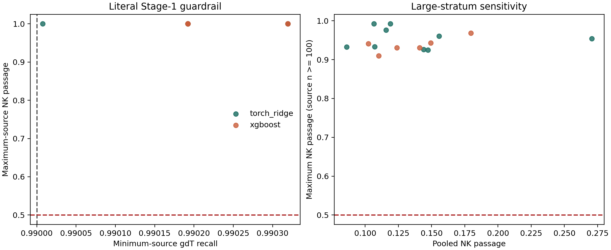
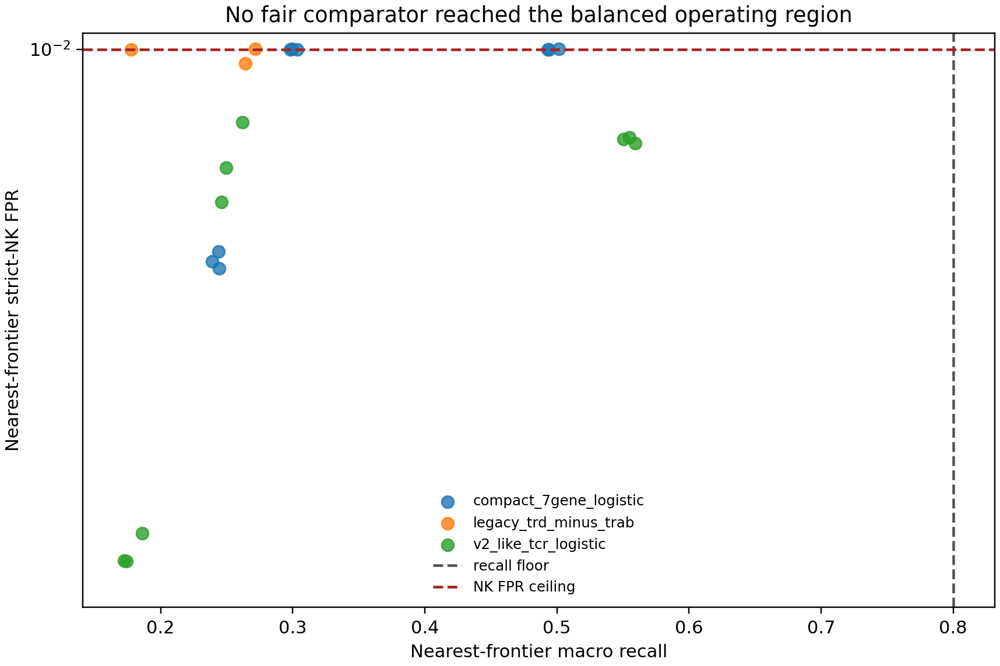

SUPERVISION REPORT · 7 AUGUST 2026
gdTAI V4.1-GPU Gate C
Nested cross-dataset evaluation under the precommitted purity and recall guardrails.
What Was Evaluated
Ground truth, 197 genes, grouped splits, CD4/Treg exclusions, calibration, and operating thresholds were unchanged. Stage 1 compared three deterministic GPU ridge penalties with two fixed GPU XGBoost configurations. Primary gdT and productive alpha-beta T recall had to remain at least 0.99 and 0.98 in every inner primary source, while strict-NK passage had to remain at most 0.50 in every NK source.
Silver, sorted, dual, ambiguous, and unlabeled cells never selected models or thresholds. Fair compact seven-gene and 153-gene TCR comparators used GPU ridge with the same grouped folds, exclusions, hard strict-NK negatives, calibration, and final thresholds. The raw TRD-minus-TRAB score was evaluated without refitting.
Stage-1 Blocking Result
All 15 candidate-by-outer-fold evaluations converged, but 0/15 passed. At the highest threshold retaining the required T-cell recalls, at least one NK source still had passage above 50%. The one-cell GSE190870 stratum makes the literal maximum-source statistic discontinuous, but it does not explain away the result: after restricting the diagnostic calculation to NK sources with at least 100 cells, the best worst-source passage still ranged from 90.97% to 93.23% across outer folds. Pooled NK passage was lower at 8.60% to 12.38%, showing marked source heterogeneity rather than adequate general separation. These post-hoc summaries do not alter the official failure.


| outer_fold_id | family | minimum_source_gdt_recall | minimum_source_abt_recall | pooled_nk_passage | maximum_nk_passage_sources_n_ge_100 | worst_nk_source_n_ge_100 | worst_nk_source_n_ge_100_n | maximum_source_nk_passage | worst_nk_source_n |
|---|---|---|---|---|---|---|---|---|---|
| outer_0_HRA005041 | xgboost | 0.9903 | 0.9896 | 0.1238 | 0.9305 | GSE287301 | 1539 | 1 | 1 |
| outer_0_HRA005041 | xgboost | 0.9903 | 0.9903 | 0.1409 | 0.9305 | GSE287301 | 1539 | 1 | 1 |
| outer_1_GSE144469 | xgboost | 0.9902 | 0.9989 | 0.1025 | 0.9409 | BALF_BLOOD_COPD | 254 | 1 | 1 |
| outer_1_GSE144469 | torch_ridge | 0.9902 | 0.9984 | 0.1066 | 0.9921 | BALF_BLOOD_COPD | 254 | 1 | 1 |
| outer_2_BALF_BLOOD_COPD | torch_ridge | 0.9902 | 0.9992 | 0.08601 | 0.9323 | GSE144469 | 7804 | 1 | 1 |
| outer_2_BALF_BLOOD_COPD | torch_ridge | 0.9902 | 0.9992 | 0.1072 | 0.9334 | GSE144469 | 7804 | 1 | 1 |
Fair Comparator Results
No compact seven-gene ridge, V2-like TCR-gene ridge, or raw legacy-score threshold met the balanced or high-purity constraints. Therefore there are no valid held-out predictions from which to claim F1, calculate a paired bootstrap advantage, or select a V4 model.
| outer_fold_id | model_id | nearest_objective | nearest_recall | nearest_paired_abt_fpr | nearest_strict_nk_fpr | recall_requirement | paired_abt_fpr_limit | strict_nk_fpr_limit |
|---|---|---|---|---|---|---|---|---|
| outer_0_HRA005041 | compact_7gene_logistic | 0.3681 | 0.2441 | 0.002009 | 0.006741 | 0.8 | 0.002 | 0.01 |
| outer_0_HRA005041 | legacy_trd_minus_trab | 0.3939 | 0.2643 | 0.001998 | 0.009731 | 0.8 | 0.002 | 0.01 |
| outer_0_HRA005041 | v2_like_tcr_logistic | 0.2734 | 0.1862 | 0.002009 | 0.003888 | 0.8 | 0.002 | 0.01 |
| outer_1_GSE144469 | compact_7gene_logistic | 0.4221 | 0.3033 | 0.0009419 | 0.009992 | 0.8 | 0.002 | 0.01 |
| outer_1_GSE144469 | legacy_trd_minus_trab | 0.2996 | 0.1777 | 0.0001199 | 0.01 | 0.8 | 0.002 | 0.01 |
| outer_1_GSE144469 | v2_like_tcr_logistic | 0.3402 | 0.262 | 0.001997 | 0.008672 | 0.8 | 0.002 | 0.01 |
| outer_2_BALF_BLOOD_COPD | compact_7gene_logistic | 0.6355 | 0.5014 | 0.001144 | 0.01 | 0.8 | 0.002 | 0.01 |
| outer_2_BALF_BLOOD_COPD | legacy_trd_minus_trab | 0.4002 | 0.2715 | 0.0004062 | 0.01001 | 0.8 | 0.002 | 0.01 |
| outer_2_BALF_BLOOD_COPD | v2_like_tcr_logistic | 0.6615 | 0.5595 | 0.001999 | 0.008323 | 0.8 | 0.002 | 0.01 |
What Is Not Estimable
V4 Stage 2 was not entered because Stage 1 had no eligible candidate. Extension-cohort model false-positive rates and paired hierarchical-bootstrap differences are consequently not estimable. This is a valid negative Gate C result, not missing evidence and not authorization to relax a threshold after observing outcomes.
Interpretation
The precommitted Stage-1 rule is statistically brittle because it takes a hard maximum over NK strata ranging from one cell to more than 90,000 cells. However, the ≥100-cell sensitivity analysis shows a second, substantive problem: at the recall-preserving threshold, at least one well-populated dataset passes more than 90% of strict NK cells. Thus V4.1 failed because T-lineage sensitivity and cross-dataset NK rejection were incompatible under this feature panel, not merely because of a one-cell denominator. A future V4.2 may use hierarchical or minimum-stratum guardrails, but it must also improve source-robust discrimination and be declared before re-evaluation.
Decision Boundary
No V4.1 model is promoted or released. No whole-atlas inference is permitted. V3 Round 14 remains the balanced default pending a separately reviewed redesign.